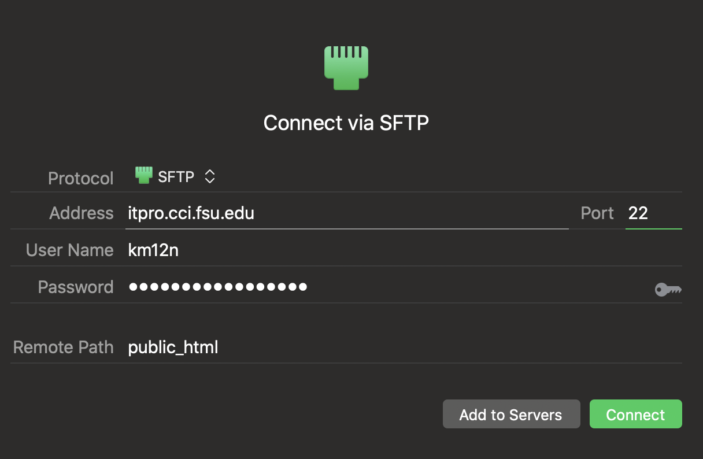
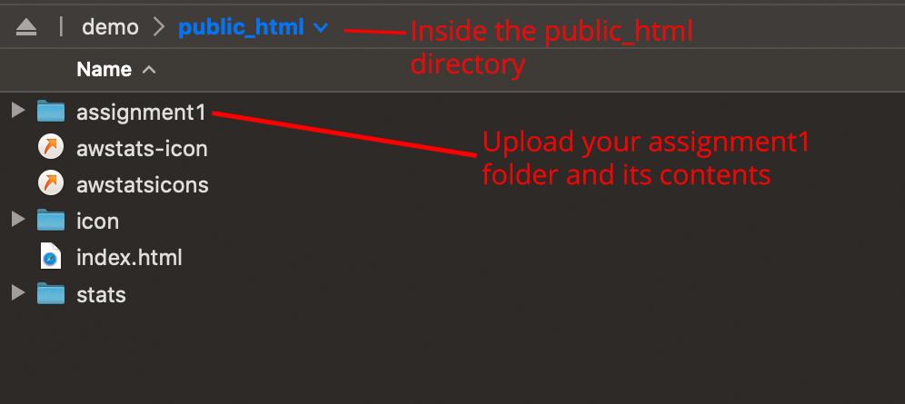

Enter the connection details as follows:
Server address: torch.cci.fsu.edu
Username: Your FSUID
Password: Your FSUID password
Port: 22
Protocol: SFTP

When you first connect, you will be dropped in your home directory. You will see a couple of files and folders. Upload your assignment1 folder into the public_html folder. This is the directory used by the server to make your pages available in the web. You must upload all of your assignment files into the public_html folder or they will not be accessible for grading.

Step 5) Test your link. In your browser, visit http://YOUR-FSUID.itpro.cci.fsu.edu/assignment1 and ensure your site is working properly. If you do not see your page, ensure you uploaded your assignment1 folder and its contents to the public_html folder and not anywhere else.
tldr - get a cheatsheet of linux commands Example: 'tldr ls'. Tired of bash? Want to switch to zsh? Just type 'zsh'. Git is pre-installed and encouraged! Git clone your favorite projects. Upload any website files to /web/FSUID. Want to protect some secret project files? Your home directory has strict permissions. Need a language, package, or framework installed? Contact the CCI Helpdesk at https://support.cci.fsu.edu.Features available to students: